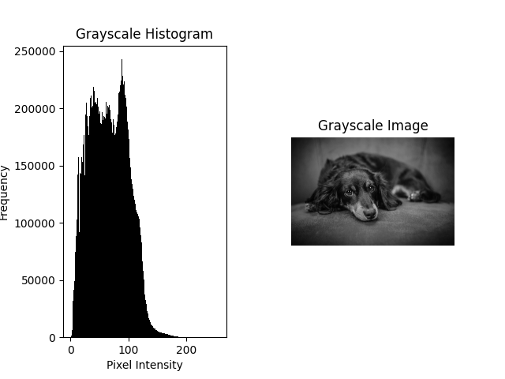
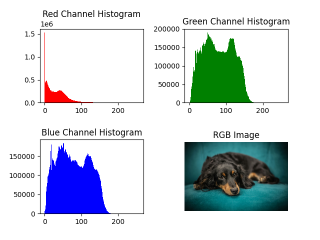

Histogram Analysis
Theory
Histograms are graphical representations of the distribution of pixel intensities in an image. They are useful for:
- Understanding brightness and contrast levels.
- Detecting underexposure or overexposure.
- Performing contrast stretching and equalization.
- Comparing grayscale vs. color intensity distributions.
Python Code
import cv2
import numpy as np
import matplotlib.pyplot as plt
def plot_histogram(image, color_space="BGR"):
"""
Plot histograms for grayscale or color images.
"""
if color_space == "GRAY":
# Grayscale histogram
plt.subplot(1, 2, 1)
plt.hist(image.ravel(), bins=256, range=[0, 256], color="black")
plt.title("Grayscale Histogram")
plt.xlabel("Pixel Intensity")
plt.ylabel("Frequency")
plt.subplot(1, 2, 2)
plt.imshow(image, cmap="gray")
plt.title("Grayscale Image")
plt.axis("off")
plt.subplots_adjust(hspace=0.4, wspace=0.4)
plt.show()
elif color_space == "BGR":
# Convert BGR → RGB for correct color display
image_rgb = cv2.cvtColor(image, cv2.COLOR_BGR2RGB)
plt.subplot(2, 2, 1)
plt.hist(image[:, :, 2].ravel(), bins=256, range=[0, 256], color="r")
plt.title("Red Channel Histogram")
plt.subplot(2, 2, 2)
plt.hist(image[:, :, 1].ravel(), bins=256, range=[0, 256], color="g")
plt.title("Green Channel Histogram")
plt.subplot(2, 2, 3)
plt.hist(image[:, :, 0].ravel(), bins=256, range=[0, 256], color="b")
plt.title("Blue Channel Histogram")
plt.subplot(2, 2, 4)
plt.imshow(image_rgb)
plt.title("RGB Image")
plt.axis("off")
plt.subplots_adjust(hspace=0.5, wspace=0.4)
plt.show()
# Load an image
image_path = "assets/dog.jpg"
image = cv2.imread(image_path)
if image is None:
print("Error: Image not found!")
exit()
# Convert to grayscale
gray_image = cv2.cvtColor(image, cv2.COLOR_BGR2GRAY)
# Plot histograms
plot_histogram(gray_image, color_space="GRAY")
plot_histogram(image, color_space="BGR")
Output Example
Below are example histograms:
 